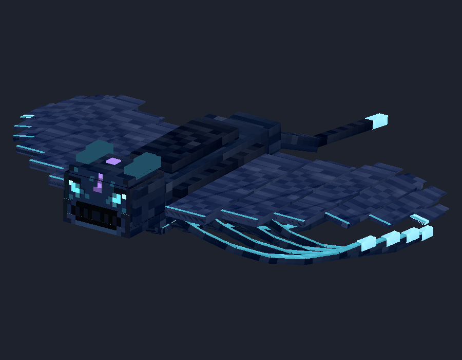
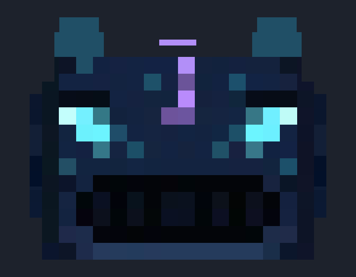
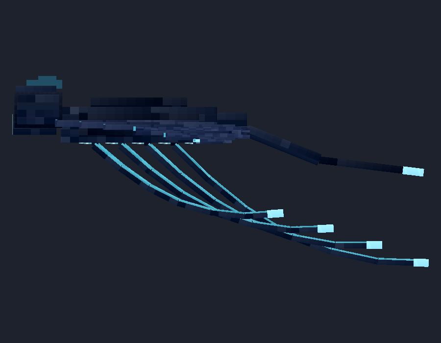
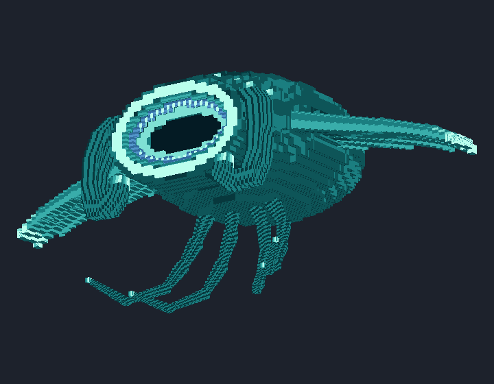
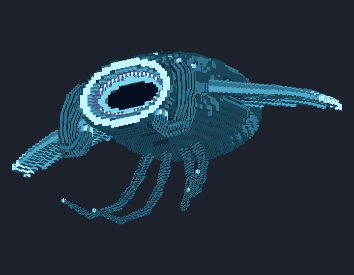
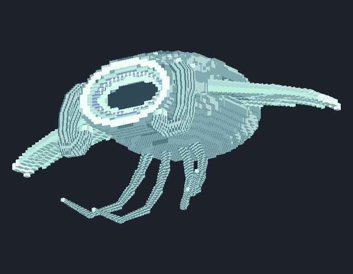
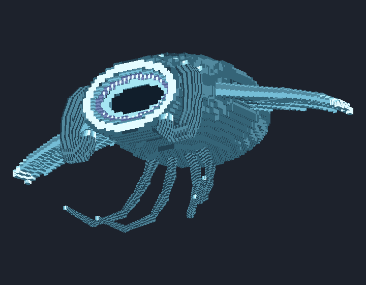
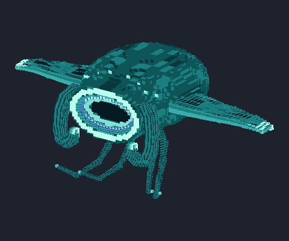
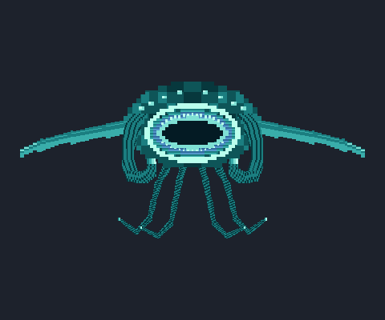

The approved Tidewraith pair
Two separate mobs, kept at their authored sizes. These images and GIFs are actual UV-mapped software reviews, not Minecraft captures.
REGULAR · NOT A BOSSTidewraith · repaired Abyssal face
zerog_tweaks:tidewraith · two animated eyes · repaired head join · original wings and tendrils · 265 parts · 4096² atlas.



Open editable regular model · Original face-repair review
BOSS · AUTHORED SIZE, NOT ×6Tidewraith Boss · voxel manta mouth
zerog_tweaks:tidewraith_boss · eight animated eyes · oval manta mouth · 4,090 parts · 32² atlas · 5-block nominal wingspan.






Open editable boss model · Full four-palette review
Download complete approved-stack backup · Runtime features, spawn commands and limits · Verification ledger
Original snapshots and receipts are preserved. Companion-scaled studies are not used in the boss renderer. Initial spawnable implementation is separate from full campaign boss abilities and natural spawning.